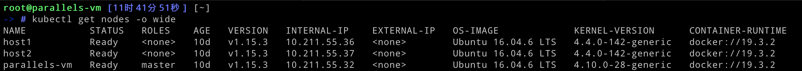

本篇将不再使用Minikube，而是在一个多节点的Kubernetes环境之中部署应用
本地情况
我本地的Kubernetes有三个节点，全部运行在本地的虚拟机中，相关的信息如下

关于如何搭建集群在这里就不详细论述了
我本机存在的问题
调度到节点host1上的pod经常会报出 disk pressure 的问题
集群一开始使用的是weave作为网络插件，但是一些pod之间无法正常通信，所以最后就又换成了Kubernetes官方提供的flannel
修改部分Docker镜像并重新打包
MySQL部署
由于本地的Minikube环境中的不存在字符串编码的问题，但是我在实际部署到集群中时出现了编码的问题，所以就需要事先对MySQL做相关的配置，重新打包。
创建文件夹 mysql-docker-deploy ，结构如下
1 | mysql-docker-deploy |
可以运行一下MySQL镜像，登录到容器中查看它配置文件的组织形式，就会发现它就会读取 /etc/mysql/conf.d/ 和 /etc/mysql/mysql.conf.d/ 下所有以 .cnf 结尾的配置文件，所以在Dockerfile中可以这样书写，将我们自己写的 mysql.cnf 加入进去
1 | FROM mysql:5.6 |
而 mysql.cnf 的具体内容如下，几乎全部都是这是字符编码相关的配置
1 | [mysql] |
之后执行打包命令，打上最新的tag，推送至自己的私有仓库
当然，为了免去后面还要登录运行容器导入数据等麻烦，可以像第二节中介绍的那样，编写如下的Dockerfile
1 | FROM mysql:5.6 |
将所有要加载的配置和导入的数据写到 mysql.sql 文件中
前端静态文件部署
首先，将renren-fast-vue的前端文件 static/config/index-prod.js 中对于后端服务器地址的部分修改为主节点的ip地址，重新运行 npm run build 打包
其次，为了防止字符编码问题的出现，需要对nginx的配置文件做如下的修改
1 | server { |
修改完成后，重新打包Docker镜像，打上最新的tag，并推送至自己的私有仓库
部署
我的做法是将yaml的配置文件全部上传至主节点，然后执行 kubectl apply -f，相关细节和之前介绍的单节点部署相同，但是还是有几处不同的
MySQL 部署
由于还是使用的hostpath，所以为了保证数据不丢失，我希望每次MySQL的Pod实例都是存在于同一个节点上，这个可以使用为节点打label实现，例如此处，我希望使用host2节点，就执行如下操作
1 | kubectl label nodes host2 db=mysql |
这样，在MySQL的Deployment配置文件中，就需要使用 nodeSelector 对节点进行选择，部分代码如下
1 | template: |
对于数据库初始化数据的导入，我是将文件上传至相应的pod中的，使用 kubectl cp 即可，就和 scp 的使用方式相同，例如
1 | kubectl cp mysql.sql mysql-demo-946688857-978tf:/tmp/ |
后端部署
由于SpringBoot非常耗性能，所以我希望它可以调度到任意适合的节点，当然包括主节点，但是在集群中主节点一般不允许有pod被调度到它那边，如果describe一下master节点的信息就会有如下的输出（部分）
1 | Taints: node-role.kubernetes.io/master:NoSchedule |
所以对其deployment的配置文件可以做如下修改
1 | template: |
实用技巧
批量删除 evicted 状态的Pod
1 | kubectl get pods | grep Evicted | awk '{print $1}' | xargs kubectl delete pod |
去除taint
例如去除节点host2的 node.kubernetes.io/disk-pressure:NoSchedule，指令如下
1 | kubectl taint nodes host2 node.kubernetes.io/disk-pressure:NoSchedule- |